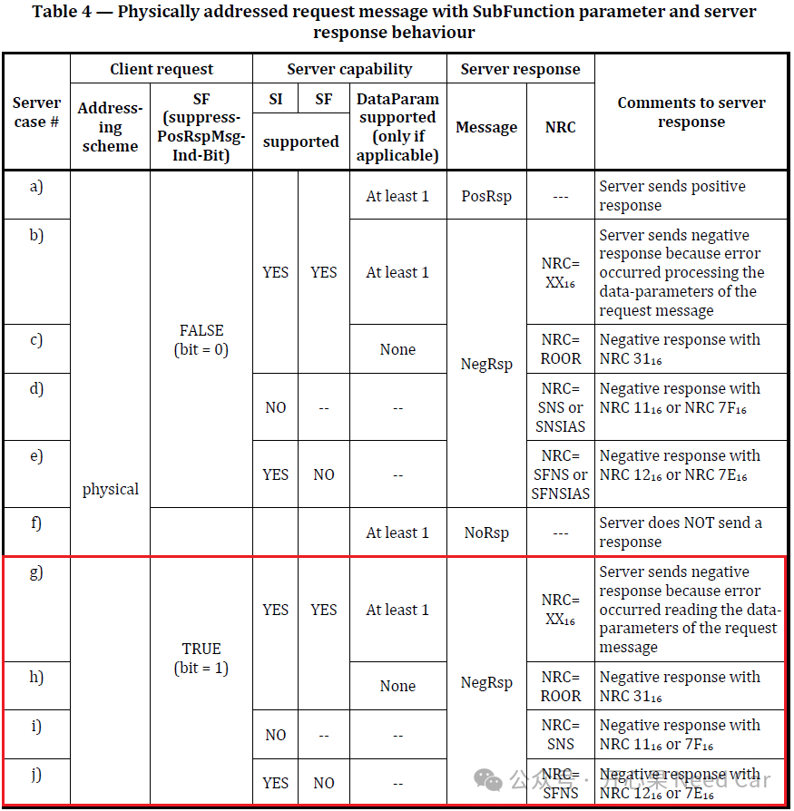
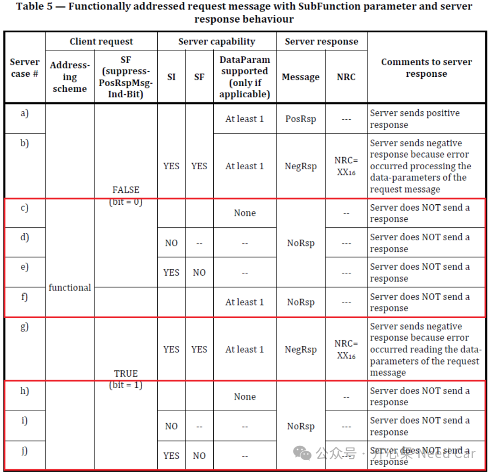

开心果 Need Car · 2026-04-10T06:21:00+08:00 · 微信原文
在 UDS（Unified Diagnostic Services）开发和测试中，0x22（ReadDataByIdentifier）服务是最常用、也是最容易被误用的服务之一。一个看似简单、却经常引发争议的问题是：当客户端通过 UDS 0x22 请求一个 ECU 不支持的 DID 时，服务器是否可以不回复？
这个问题在不同项目、不同 ECU 实现中，常常出现不一致的行为：
有的 ECU 会返回 NRC=0x31，有的 ECU 直接静默无响应。
哪种才是“符合标准”的？答：两种都可能是对的，前提是寻址方式不同。
一、问题背景：为什么这个点容易被搞错？
在很多工程讨论中，大家常常默认一个前提：“UDS是请求<–>响应协议，既然收到了请求，就必须有响应。”
这个理解在大多数情况下是对的，但它忽略了 UDS 协议中一个非常关键的设计元素：物理寻址（Physical Addressing）与功能寻址（Functional Addressing）的区别。
ISO 14229‑1 并没有简单地规定“所有请求都必须响应”，而是为不同寻址方式定义了不同的服务器响应规则，尤其是在不支持的服务 / 不支持的参数这种场景下 。
二、先给出结论
基于 ISO 14229‑1:2020 的服务器响应规则，对于 UDS 0x22（ReadDataByIdentifier）请求不支持的 DID：
✅ 物理寻址（physical addressing）
→ 服务器（Serrver）必须回复否定响应（Negative Response）
✅ 功能寻址（functional addressing）
→ 服务器（Serrver）允许不回复（No Response）
这并不是“厂商自由发挥”，而是标准明确允许的行为差异 。
三、为什么物理寻址下“必须回复”？
（一）物理寻址的语义
物理寻址是一种点对点通信：
Tester明确知道目标Server
请求是专门发给某一个Server的
Server对该请求负有明确的“告知责任”
在这种情况下，如果 ECU 不支持某个 DID，却选择静默，那么 Tester 无法区分造成问题的原因，造成的原因可能是DID 不支持、ECU 软件异常、通讯链路故障等。
因此，ISO 14229‑1 要求在物理寻址下，错误必须明确告知Server，即通过 Negative Response 的形式返回 NRC。
（二）对 0x22 不支持 DID 的典型响应
在物理寻址下，请求不支持的 DID，最常见、也是最推荐的 NRC 是：0x31 – requestOutOfRange，这正是标准中用于表示“请求的数据标识符超出服务器支持范围”的错误码 。
重要细节：suppressPosRspMsgIndicationBit（bit7）不会抑制否定响应，只要是物理寻址，否定响应必须发送。规范需求如下所示：

注释：SI（service identifier），SF（SubFunction）
上图中的g~h，规范给出的解释如下：
because the suppressPosRspMsgIndicationBit is ignored for any negative response that needs to be sent upon receipt of a physically addressed request messages. |
（一）功能寻址的设计目的
功能寻址本质上是一种广播式探测机制：“系统中，谁支持这个服务 / 这个 DID，就回应。”它的典型用途包括：
探测 ECU 能力
获取 VIN、软件版本等通用信息
多 ECU 并存场景下的能力发现
在这种模式下，如果每一个“不支持该 DID”的 ECU 都回复 NRC，将会造成：总线负载过高、诊断通信效率显著降低、Tester 极难解析“真正支持者”。
因此，ISO 14229‑1 在服务器响应规则中明确允许：在功能寻址下，对于“不支持类错误”，服务器可以抑制响应 。
五、哪些错误在功能寻址下可以被抑制？
以 UDS 22 为例，以下几类 Negative Response Code 属于**“不支持类 NRC”**，在功能寻址下允许被抑制：
0x31 – requestOutOfRange（DID 不支持）
0x11 – serviceNotSupported
0x12 – SubFunctionNotSupported
0x7F / 0x7E – NotSupportedInActiveSession
这意味着：功能寻址 + 不支持 DID → No Response 是合规行为。功能寻址的规范要求如下：

其中，对于c和h给出的解释如下：
because the negative response code ROOR (requestOutOfRange, which is identified by the server because the service identifier and SubFunction parameter are supported but a required data-parameter is not supported of the client's request) is always suppressed in case of a functionally addressed request message. The suppressPosRspMsgIndicationBit does not matter in such case. |
所以，对于功能寻址，如果0x22服务请求的DID不支持，Server可以不回复。
六、一个非常容易踩的坑
很多 ECU 实现中存在以下问题：功能寻址下静默（这是对的），物理寻址下也静默（这是错误的）。这是不符合 ISO 14229‑1 的。
在物理寻址下，如果 ECU 对 0x22 不支持的 DID 不回复，将直接导致Tester P2 超时，测试结果误判为通信失败，不符合 OEM 或三方测试工具的判定逻辑。
七、对测试和工具开发的实际影响
对 ECU 开发者，必须区分 TA_type（physical / functional），不要用“统一逻辑”处理两种寻址。0x22 + physical + unsupported DID → 必须返回 NRC
对 Tester / CANoe Test 设计者，功能寻址下：No Response ≠ Fail，更多时候代表 “该 ECU 不支持此 DID”。
测试用例中要区分：No Response（acceptable）和Timeout due to error（not acceptable）。
八、总结
UDS 0x22 服务在请求不支持 DID 时，是否可以不回复，取决于寻址方式：
物理寻址必须回复否定响应；
功能寻址允许不回复，这是标准明确支持的行为。
往期精彩回顾